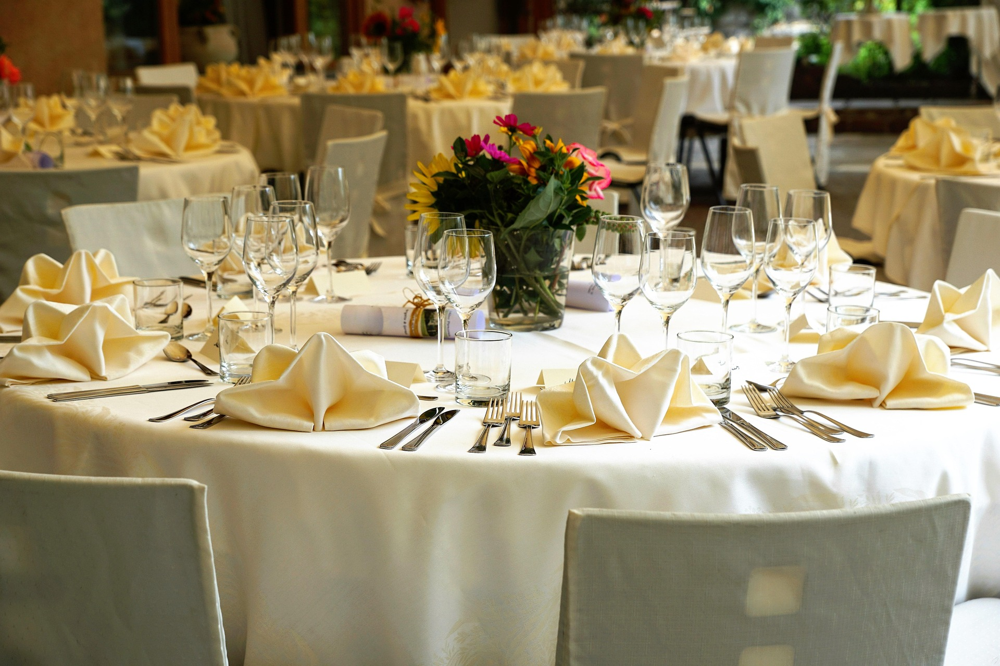
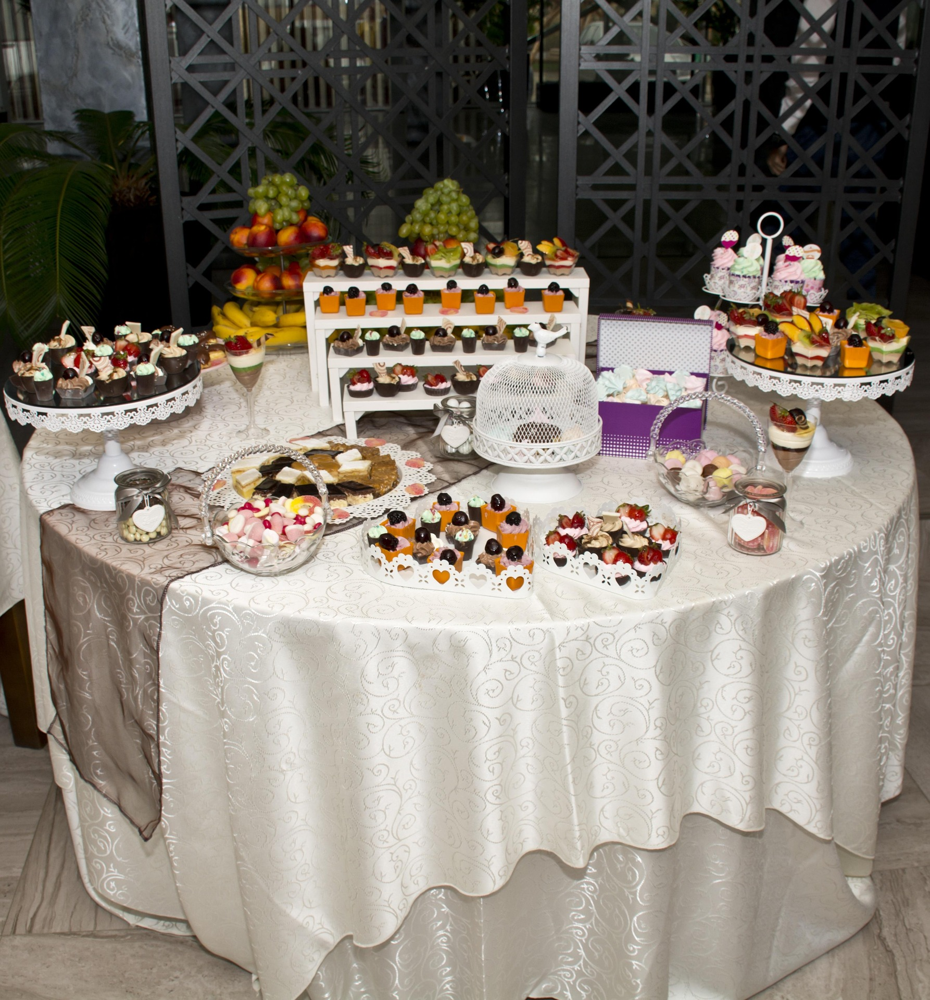
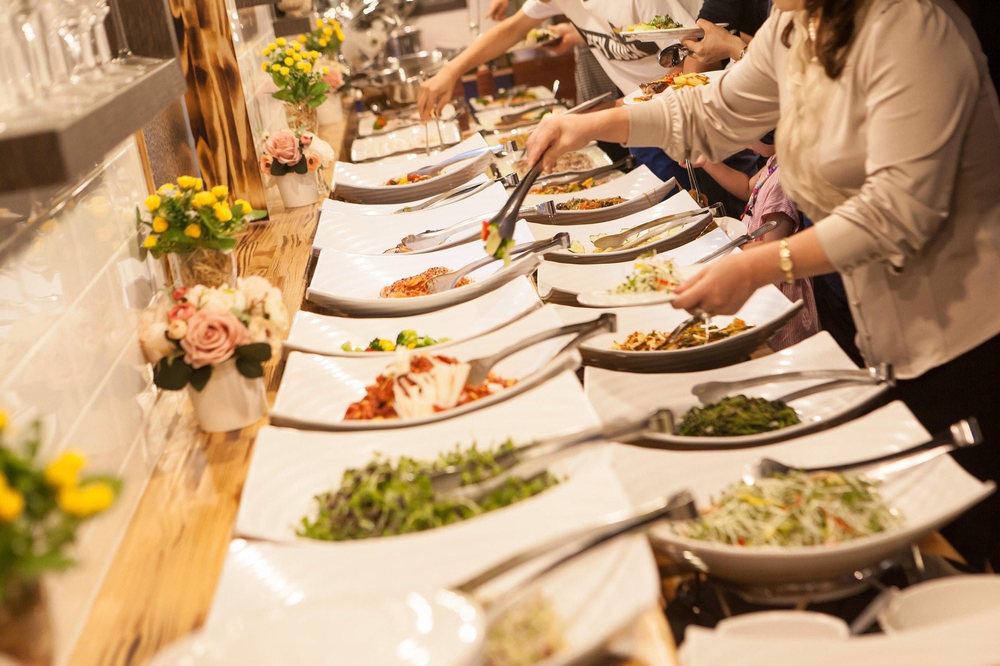
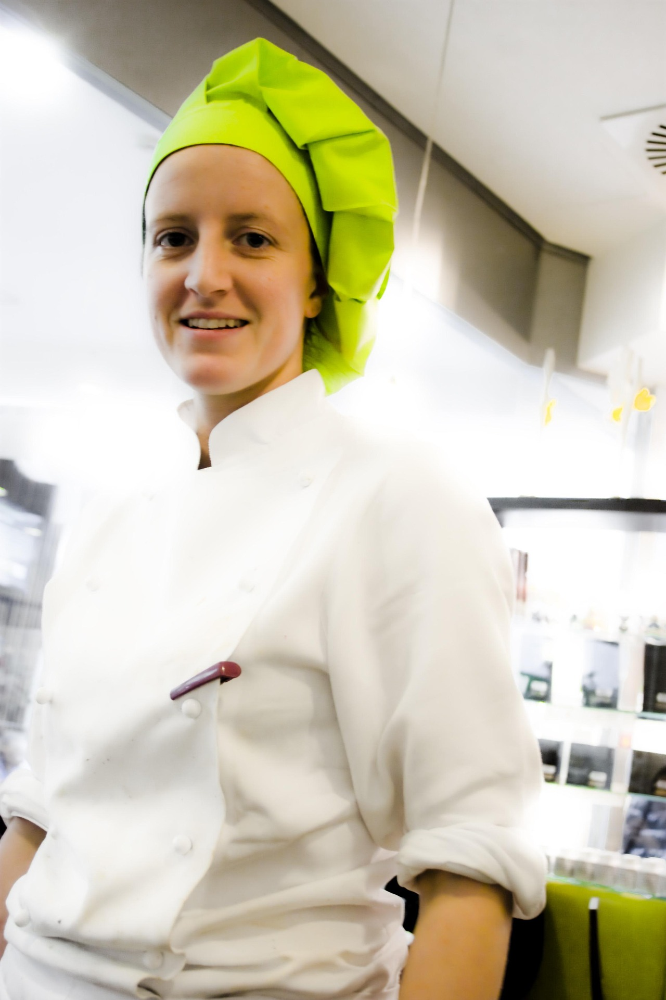

Nuestros Servicios
En CocinArte preparamos comida casera con un toque profesional para que tu solo te enfoques en disfrutar. Atendemos eventos de todos los tamanos en el area metropolitana de Puerto Rico.



¿Por que escoger CocinArte?

Nuestro menu esta inspirado en la cultura y gastronomia de Puerto Rico. Desde un pernil asado, hasta un flan de queso, cada plato se prepara con ingredientes frescos y recetas de la casa.
Sabemos que cada evento es unico. Por eso ofrecemos paquetes para diferentes presupuestos y cantidades de invitados y te ayudamos a escoger el menu ideal para tu celebracion.
- Comida fresca preparada
- Paquetes de 25 a 200 invitados
- Servicio putual y personal profesional
- Cotizacion rapida y sin compromiso